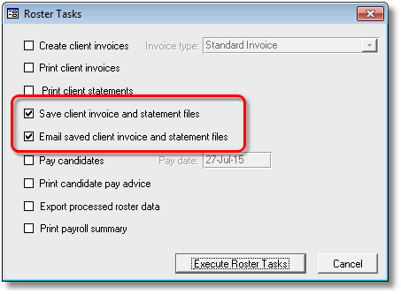
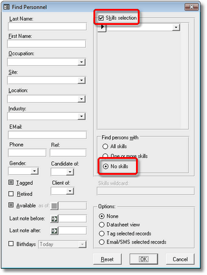
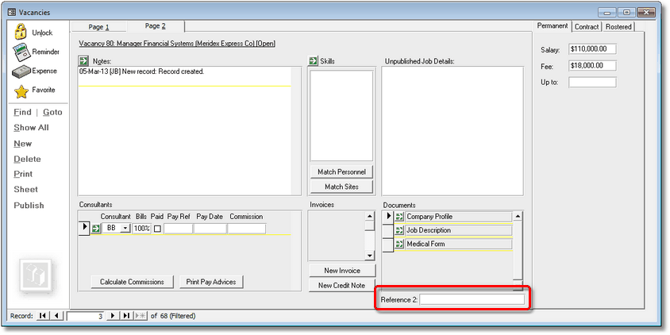
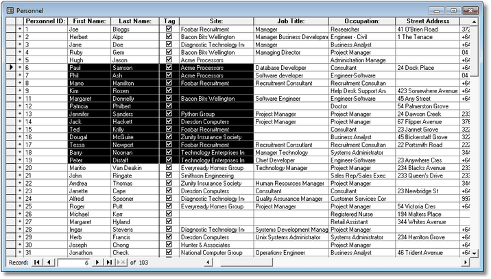

|
|
PRS News & Tips | August 2015 |
We’ve just released PRS 8.1.7. To download and install this recommended upgrade go to the Installing the Latest PRS Client section on our Updates web page and follow the instructions.
What’s New in PRS 8.1.7
Our most requested feature has been for more user-definable Vacancy Activities — the release doubles the number of user-definable Vacancy Activities giving you a total of four user-definable activities.
For a full list of the changes since the previous release see the PRS Changelog web page.
New User-defined Vacancy Activities
 in version 8.1.7
in version 8.1.7
We’ve doubled the number of user-definable Vacancy Activities giving you a total of four user-definable activities.
Two new Roster processing tasks
in version 8.1.7
We have added Save client invoice and statement files and Email saved client invoice and statement files Roster tasks. These new tasks save and email Roster invoices and statements in PDF format.

Find people with no assigned skills
in version 8.1.7
A No skills option has been added to the Personnel Find command — it allows you to find personnel that have not had any skills assigned to them.

Second Reference field added to Vacancies form
A second general purpose field Reference 2 has been added to page two of the Vacancies form. It generates Ref2 bookmark for Vacancies document templates and VacancyRef2 for Invoice document templates.

|
Note
|
To enable this feature you need to run the PRS 8.0.6 Shared database Install Wizard and then rebuild the shared PRS database to version 8.0.6 (see Upgrading PRS Shared Data on the PRS website for details). |
Tips and Tricks
Use the Zoom Box to edit small text fields
Edit short or overflowed fields in large Zoom Box — just click in the field’s textbox then enter the Shift+F2 keyboard shortcut.
It also works in Datasheet View and is useful for viewing long document names.
Disable Auto-Correction
The default Auto-correction behaviour sometimes gets in the way, for example when entering personnel names. You can selectively disable auto-correction features using the PRS Tools→AutoCorrect… menu command — just untick the features that you don’t want (untick all checkboxes to disable AutoCorrect altogether).
Copy and Paste from Datasheet View
You can copy data from a PRS form in Datasheet View to an Excel spreadsheet:
-
Put the form into Datasheet View using the PRS Window→Toggle Form View menu command.
-
Use you mouse to select the desired cells. NOTE: Selection is made using the Cross cursor which appears when you hover in the cell’s top-left corner.
-
Copy them using the PRS Edit→Copy menu command.
-
Switch to your spreadsheet, select the target cell and paste.

|
Tip
|
You can sort the Datasheet view by the selected column using the PRS Records→Quick Sort→Ascending and Records→Quick Sort→Descending menu commands. |
Need help?
Our Support web page explains how to get answers to PRS questions and includes links to articles on Maintaining Database Reliability and Performance and PRS Best Practice Deployment.
|
Important
|
If you no longer wish to receive this newsletter please email support@prshq.com with the word UNSUBSCRIBE in the subject line. |